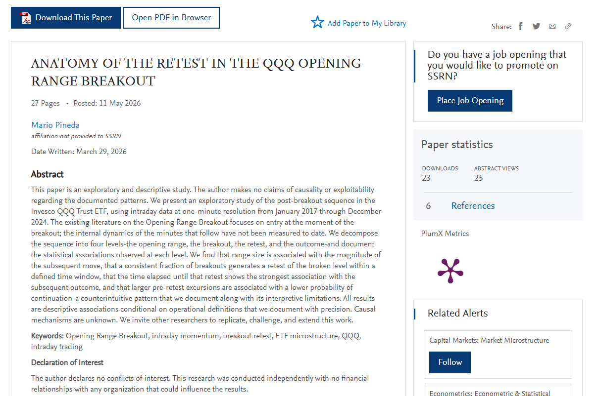

Working Paper Original: Pineda, Mario, ANATOMY OF THE RETEST IN THE QQQ OPENING RANGE BREAKOUT (March 29, 2026). Available at SSRN: https://ssrn.com/abstract=6745958 or http://dx.doi.org/10.2139/ssrn.6745958
Repositorio en Github: https://github.com/soyMarioPineda/Research-QQQ

9:31 de la mañana. Amos llevaba 20 minutos frente a sus pantallas, con el café todavía humeando al lado del teclado. Había pasado los primeros 15 minutos de la sesión haciendo lo que hace todos los días: observar. Sin tocar nada. Solo mirando cómo el QQQ dibujaba su rango de apertura. El precio había subido, bajado, subido de nuevo, y se había quedado oscilando entre dos niveles muy claros: un techo en $590 y un piso en $586.10. Ese rango era su referencia para el día.
A las 9:46, el precio rompió hacia arriba. Superó el $586.5 con fuerza. Carlos compró.
Lo que pasó después es lo que le pasa a casi cualquier trader que opera el Opening Range Breakout: el precio subió un poco, luego se devolvió. No llegó a su stop loss, pero sí regresó hasta casi el nivel que había roto. Carlos se puso nervioso. ¿Esto está fallando? ¿Salgo? Se quedó. El precio rebotó desde ese nivel y siguió subiendo. Al final del día, su operación cerró con ganancia.
Pero la pregunta fue: ¿ese regreso al nivel fue una señal de algo? ¿Siempre pasa? ¿Cuándo ese regreso termina bien y cuándo termina mal?
Queria empezar con el contexto de como fue la concepción de lo que resultó el working paper que publiqué hace unos dias en el SSRN, en este artículo narro desde mi perspectiva el proceso que se llevó a cabo para crearlo.
Eh de confesar que estaba analizando una posible ventaja para las opciones 0DTE en el QQQ, aun lo tengo en mente, sin embargo ese será tema de otro artículo que publicaré mas adelante.
No encontré literatura relacionada
El Opening Range Breakout es una de las estrategias más estudiadas en los mercados financieros. La idea es simple: los primeros minutos de la sesión reflejan todo el desequilibrio que se acumuló durante la noche. Cuando el precio rompe el rango que se formó en esos primeros minutos, está diciendo algo sobre la dirección que tomará el resto del día.
Hay papers académicos serios que documentan esto. Por ejemplo, Carlo Zarattini, encontró que aplicar esta estrategia en QQQ desde 2016 produce un rendimiento anualizado del 33% neto de comisiones. No es un resultado menor.
Pero todos esos estudios comparten una característica: miden lo que pasa en el momento del breakout y hacia adelante. No encontré alguien que estudiara lo que ocurre en los minutos inmediatamente después. Tampoco quien hubiera medido ese regreso al nivel que Amos vivió esa mañana, lo que los traders llaman el retest.
¿Con qué frecuencia ocurre? ¿Cuánto tiempo tarda? ¿Hay algo en ese retest que nos diga si el precio va a continuar o va a colapsar?
Con esas preguntas comencé.
Qué datos usé y por qué
Usé datos de un minuto del QQQ desde enero de 2017 hasta diciembre de 2024. Ocho años, 2,290 días de mercado (todo está en mi repositorio de github).
Elegí QQQ por tres razones concretas. Es uno de los activos más líquidos del mundo, lo que significa que los precios reflejan actividad real y no ruido. Sigue al Nasdaq-100, con participación masiva tanto de fondos institucionales como de traders individuales.
Elegí datos de un minuto porque es la resolución que permite medir cuándo exactamente ocurrió el breakout, cuándo ocurrió el retest, y cuántos minutos pasaron entre los dos. Con datos diarios eso sería imposible. Con datos de segundo, se agrega ruido sin información adicional útil para las preguntas que hago.
Analicé 24 duraciones de rango de apertura, desde 5 hasta 120 minutos, en pasos de 5. Pero a lo largo del paper uso el rango de 15 minutos como caso representativo porque produce el tamaño de muestra más adecuado y absorbe los minutos más volátiles de la apertura.
Cómo organicé el análisis
En lugar de saltar directamente a "¿el retest predice algo?", diseñé una cadena de cuatro preguntas que avanzan de lo general a lo específico. Cada nivel construye sobre el anterior.
Nivel 1: ¿Cómo es el rango de apertura? Antes de que ocurra cualquier cosa, ¿qué características del rango se asocian con lo que vendrá después?
Nivel 2: ¿Cómo es el breakout? ¿A qué hora ocurre? ¿Con qué volumen? ¿Importa eso?
Nivel 3: ¿Cómo es el retest? ¿Qué fracción de los breakouts genera un retest? ¿Cuánto tiempo tarda? ¿Qué tan lejos llegó el precio antes de volver?
Nivel 4: ¿Qué pasa después del retest? Dado que hubo un retest, ¿el precio continúa en la dirección del breakout o falla?
Lo que encontré, nivel por nivel
Rangos más grandes, movimientos más grandes
El primer hallazgo es el más intuitivo: los días en que el rango de apertura es más amplio producen movimientos posteriores más grandes. Los días con el rango más pequeño (quintil inferior, promedio de 0.23%) tienen un movimiento máximo posterior promedio de 0.41%. Los días con el rango más grande (quintil superior, promedio de 0.87%) tienen un movimiento promedio de 1.15%. Casi tres veces más.
Esto tiene sentido. Un rango amplio refleja mayor tensión entre compradores y vendedores durante los primeros minutos. Esa tensión no desaparece cuando el precio rompe el rango; persiste y se manifiesta en un movimiento más grande.
También encontré que la posición donde cerró el precio dentro del rango predice la dirección del breakout: cuando el precio cerró en la parte alta del rango, el breakout fue alcista en el 65-73% de los casos. Cuando cerró en la parte baja, fue bajista. Esto es visible antes de que ocurra el breakout. Sin embargo, la distribución de breakouts alcistas vs bajistas es prácticamente 50/50 independientemente del tamaño del rango, lo que confirma que el ORB no resuelve el problema de la dirección por sí solo.
El breakout ocurre casi siempre en los primeros 30 minutos
El 82% de los breakouts ocurre entre las 9:30 y las 10:00 AM. Y los breakouts más tempranos producen movimientos más grandes: un promedio de 0.71% cuando ocurren en esa primera media hora, contra 0.48% cuando ocurren después de las 10:30.
El volumen del breakout tiene una relación no lineal con el movimiento posterior. El volumen óptimo no es el más alto, sino el moderado-alto (percentil 40-60 del promedio del rango). Breakouts con volumen extremadamente alto producen movimientos menores en promedio. Una posible explicación es que volumen muy alto puede indicar que hay grandes vendedores absorbiendo la compra, limitando el movimiento. No pude verificar esto directamente con los datos disponibles.
Dos de cada tres breakouts generan un retest
Bajo mis definiciones, el 68.4% de los breakouts que se alejaron al menos 0.20% del nivel roto generaron un retest válido dentro de los siguientes 120 minutos.
Aquí vale la pena explicar exactamente qué cuento como retest válido, porque las definiciones importan mucho. Para que un movimiento de regreso cuente como retest, deben ocurrir tres cosas en orden:
Primero, el precio debe alejarse al menos 0.20% del nivel roto. Esto filtra los casos donde el precio simplemente oscila sin haber establecido una dirección clara.
Segundo, después de ese alejamiento, el precio debe regresar al nivel dentro de una tolerancia de ±0.05%. Los niveles de precio tienen "ancho" en la práctica; exigir un toque exacto al centavo sería restrictivo.
Tercero, todo esto debe ocurrir dentro de los 120 minutos posteriores al breakout. Un regreso después de 2 horas pertenece a un contexto intradiario diferente.
También encontré que cuanto más lejos llega el precio antes de volver, más probable es que el retest ocurra. Cuando el precio se alejó entre 0.20% y 0.30%, el retest ocurrió el 53.8% de las veces. Cuando el precio se alejó más de 0.50%, el retest ocurrió prácticamente siempre, por encima del 98%.
El tiempo al retest es lo que más importa
Este es el hallazgo más robusto del trabajo, y el más original. Cuando miro la tasa de continuación (que el precio siga en la dirección del breakout después del retest) separada por cuánto tiempo tardó el retest en ocurrir, encuentro esto:
| Tiempo al retest | % de veces que el precio continuó |
|---|---|
| 0 a 10 minutos | 69% |
| 10 a 20 minutos | 54% |
| 20 a 30 minutos | 47% |
| 30 a 45 minutos | 39% |
| 45 a 60 minutos | 35% |
| Más de 60 minutos | 26% |
El gradiente es monotónico sin ninguna excepción. Y los extremos no se solapan: el límite superior del intervalo de confianza para retests tardíos (31.6%) está por debajo del límite inferior para retests rápidos (62.5%). Es una separación estadística limpia.
Este patrón sobrevive en los cinco regímenes de mercado que analicé: el bull market tranquilo de 2017-2019, el COVID de 2020, el bull acelerado de 2021, el bear market de 2022, y la recuperación de 2023-2024. La variación máxima entre regímenes en el grupo de retests rápidos (0-10 minutos) es de 8.7 puntos porcentuales. El patrón es consistente.
También confirmé con regresión logística que este efecto es independiente de la hora del breakout. Era una preocupación legítima: si los breakouts más tempranos producen retests más rápidos simplemente porque hay más tiempo por delante, quizás el efecto del tiempo al retest sea en realidad un efecto de la hora del día. Las pruebas estadísticas descartan esa explicación. El tiempo al retest tiene poder predictivo propio.
La interpretación que me parece más plausible, aunque no pude verificarla directamente, es que un retest rápido ocurre cuando hay órdenes esperando cerca del nivel roto. Participantes que no pudieron o no quisieron entrar en el breakout colocan órdenes de compra (o venta, dependiendo de la dirección) cerca del nivel, esperando una segunda oportunidad. Cuando esas órdenes son suficientes para absorber el pullback, el precio rebota rápidamente y continúa. Un retest que tarda mucho sugiere que ese soporte potencial ya no está disponible.
Lo que no sé, y por qué importa decirlo
Hay un resultado que debo reportar con más cuidado que los demás.
También encontré que cuanto mayor es la excursión del precio antes del retest, menor es la probabilidad de continuación. Dicho de otra forma: si el precio se aleja mucho antes de volver, es menos probable que continúe después.
El problema es que mi definición de "continuación" requiere que el precio supere ese máximo previo. Entonces cuando el máximo previo es grande, la barra que hay que superar también es grande. El patrón puede ser parcialmente un artefacto de cómo definí el resultado, no del comportamiento del mercado. Ambas cosas pueden ser ciertas al mismo tiempo, pero no tengo forma de separar cuánto aporta cada una.
Lo reporto porque el patrón es estadísticamente consistente y porque la pregunta de qué lo produce es valiosa. Pero el lector debe saber que no puedo afirmar que ese patrón sea puramente un fenómeno de mercado.
Qué no hago en este paper
Este trabajo no evalúa estrategias de trading. No incorpora costos de transacción, spreads, ni slippage. No afirma que estos patrones son explotables en trading real, ni que persistirán en el futuro. No establece causalidad: que algo esté asociado con otro no significa que lo cause.
Lo que hago es medir, con la mayor precisión que me fue posible, lo que ocurre en los datos bajo definiciones explícitas y reproducibles. Cualquier investigador que quiera replicar, contradecir o extender estos resultados tiene toda la información necesaria para hacerlo. Los datos, el código y las tablas completas están disponibles bajo solicitud.
Las preguntas que dejo abiertas
Termino con las preguntas que este paper no puede responder y que me parecen las más interesantes para trabajo futuro.
¿Estos patrones aparecen también en SPY, IWM, o en futuros de índices? ¿O son específicos del QQQ en este período? Si el patrón temporal del retest no sobrevive la replicación en otros instrumentos, habría que revisar todo.
¿Qué pasa si se redefine la continuación usando un objetivo fijo en lugar del máximo previo? Eso permitiría separar el efecto real del mecánico en el hallazgo del MFE_pre.
¿Qué explica que 2022 tenga una tasa de continuación de 60.6%, significativamente más alta que todos los demás períodos? Tengo hipótesis, pero no evidencia.
¿Qué dicen los datos de 2025 en adelante, que no están incluidos en este análisis?
Este trabajo es un primer paso en una dirección que creo valiosa. No es una conclusión. Es una invitación.